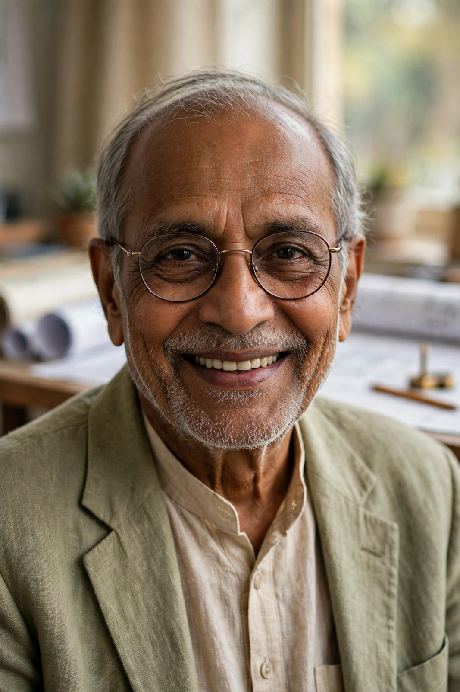

| Balkrishna Doshi | |
|---|---|
 | |
| Born | 26 August 1927, Pune, British India |
| Died | 24 January 2023 (aged 95), Ahmedabad, India |
| Nationality | Indian |
| Occupation | Architect, educator |
| Awards | Pritzker Architecture Prize (2018); Padma Vibhushan (2020); RIBA Royal Gold Medal (2022) |
Balkrishna Vithaldas Doshi (26 August 1927 – 24 January 2023) was an Indian architect, considered one of the most important figures in modern Indian architecture. He was the first Indian architect to receive the Pritzker Architecture Prize, which he won in 2018, and worked with both Le Corbusier and Louis Kahn early in his career.
Doshi was born in Pune into a Gujarati family involved in the furniture business. He studied architecture at the Sir J. J. School of Art in Bombay. In 1951 he travelled to Paris and worked in Le Corbusier's atelier for four years, an experience that profoundly shaped his approach. Returning to India, he supervised Le Corbusier's projects in Ahmedabad, including the Mill Owners' Association Building, and later collaborated with Louis Kahn on the Indian Institute of Management Ahmedabad campus.
In 1956 Doshi founded his own practice, Vastushilpa, in Ahmedabad. His work synthesised modernist principles with Indian climate, materials and patterns of life. His own studio, Sangath (1981), is partly buried and covered with vaulted shells of concrete and ceramic mosaic. The Aranya Low Cost Housing project in Indore (1982) provided plots and services for more than 80,000 people and won the Aga Khan Award for Architecture. In 1962 he founded the School of Architecture in Ahmedabad (now CEPT University), one of India's leading architecture schools.
Doshi received the Padma Shri (1976), Padma Bhushan (2020) and Padma Vibhushan (posthumously, 2023), India's civilian honours, as well as the RIBA Royal Gold Medal in 2022.